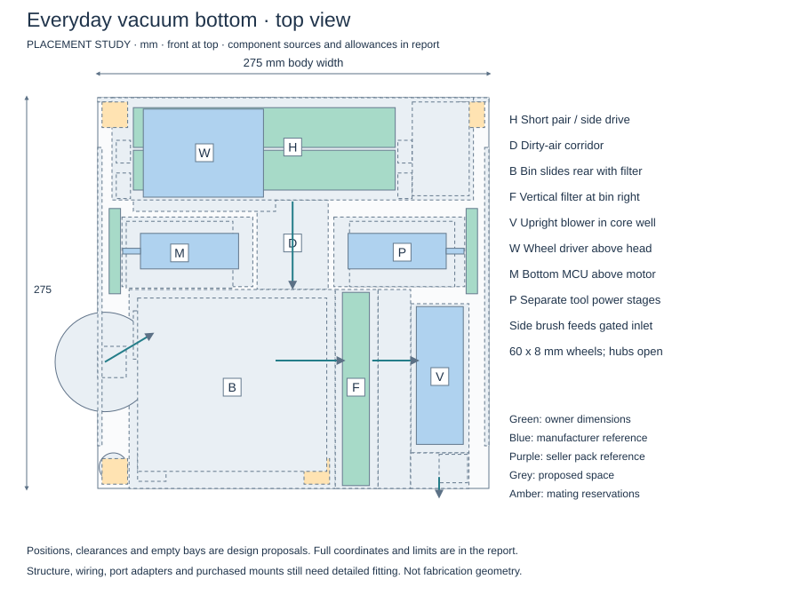
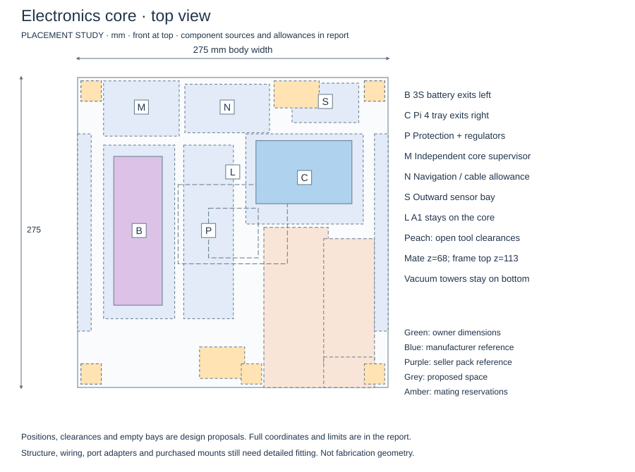
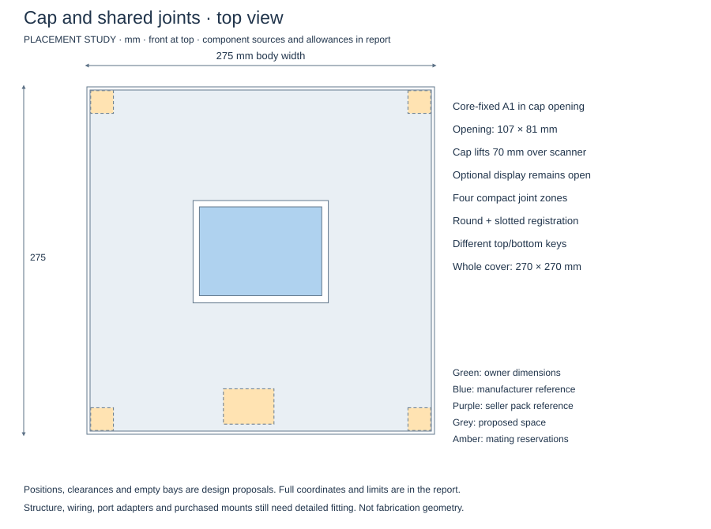
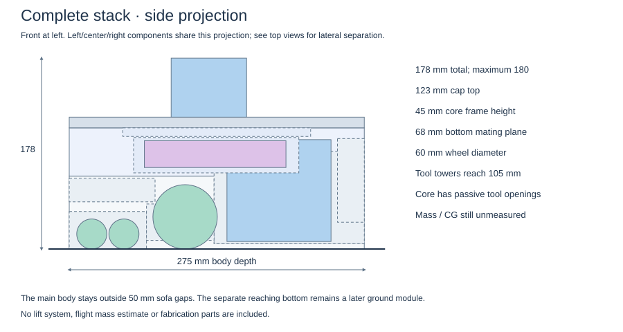
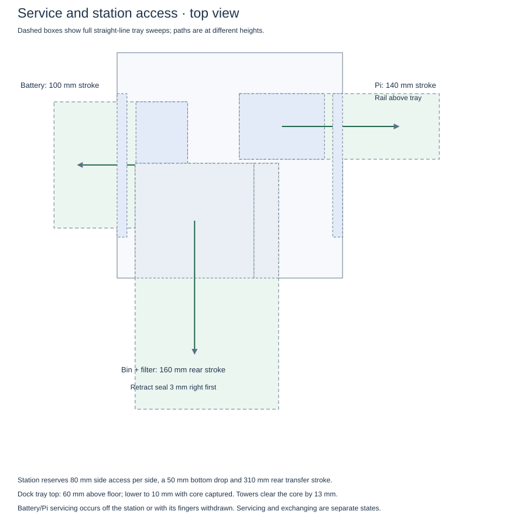

PLACEMENT STUDY · 6 SEPTEMBER 2026 · DIMENSIONS ADJUSTABLE
Core, vacuum bottom and cap
The short roller pair leads into a rear-service bin. Its upright filter and blower rise into passive
openings in the electronics frame, staying attached to the bottom. Battery and Pi trays slide out opposite sides.
275 × 275 × 178 mm rigid body, including LiDAR0.5–0.6 L usable bin target270 × 270 mm whole main panels

Open standalone drawing
Open standalone drawing
Open standalone drawing
Open standalone drawing
Open standalone drawing
Owner limits: 275 × 275 mm rigid footprint and 180 mm total height. Flexible bristles may extend.
The owner reports 60 × 8 mm drive wheels with a 3 mm center hole and no hub protrusion; the proposed 4 mm-shaft gearmotor needs a qualified bolt-on adapter. Part references nest inside proposed spaces. The side brush size, powered roller drive,
mounts, seals, cooling, wiring and automatic latch hardware remain to detail. The 70 mm brush placeholder
expands the moving outline to 305 × 275 mm. No mass or flight capability is implied.
Checked: owner size limits, reference containment, 3D interference, core pockets, three service sweeps,
cap removal, station separation and whole panel spans. These checks cover the modeled envelopes; structural and
cleaning performance remain unverified.
Coordinates and check report · Machine-readable placement ·
FreeCAD model · STEP model ·
Design decisions and next build work ·
Roller-length comparison